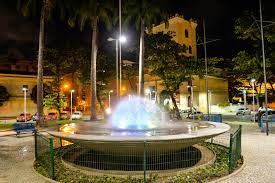

Praça do Arsenal

A Praça do Arsenal é um local histórico onde a arquitetura se mistura com a cultura local. Rodeada por construções antigas, é um lugar perfeito para um passeio tranquilo.

A Praça do Arsenal é um local histórico onde a arquitetura se mistura com a cultura local. Rodeada por construções antigas, é um lugar perfeito para um passeio tranquilo.